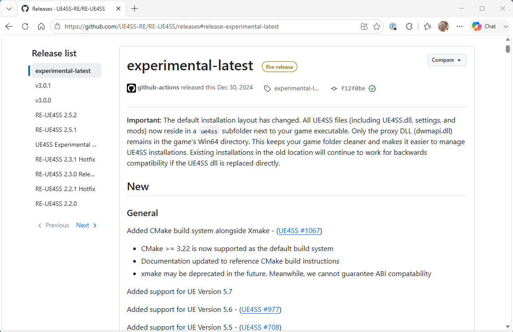
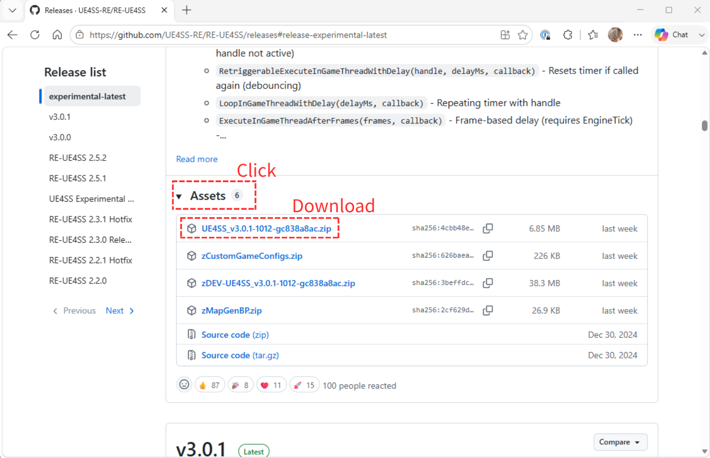
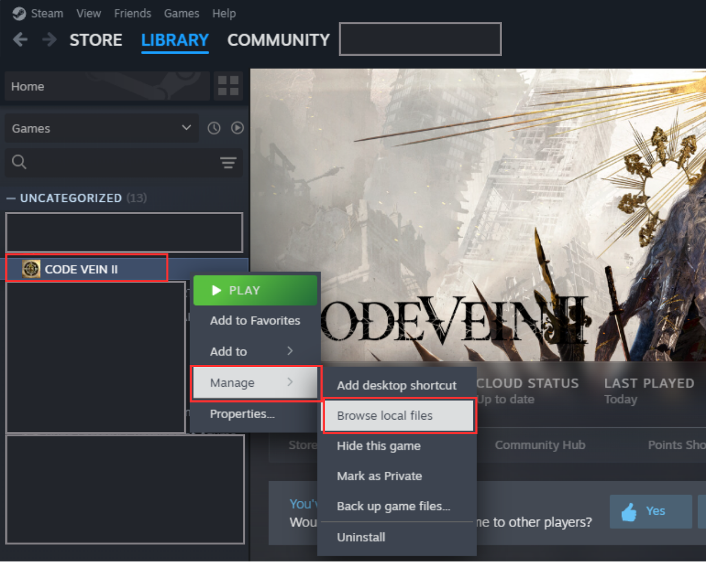

Installing UE4SS for Code Vein II
A step-by-step guide to installing the UE4SS Lua modding framework for Code Vein II via Steam.
1Download UE4SS (experimental-latest)
1-1. Open the release page
- Go to the following page:
https://github.com/UE4SS-RE/RE-UE4SS/releases#release-experimental-latest

experimental-latest release selected.1-2. Expand the Assets list
- Scroll down the page and click the Assets label to expand the list of downloadable files.
1-3. Download the UE4SS zip file
- A list of downloadable files will appear. Download the file named
UE4SS_<version>.zip.

UE4SS_.
Important: Make sure you download the file that starts with
UE4SS_ (e.g. UE4SS_v3.0.1-1012-gc838a8ac.zip) — not Source code (zip), which will not work.
2Open the game folder
2-1. Browse local files from Steam
- In your Steam library, select CODE VEIN II, then choose Manage → Browse local files.

2-2. Confirm the folder opens
- File Explorer will open showing the game's install folder.
3Install UE4SS
- Extract the zip file you downloaded in Step 1.
- In the game folder opened in Step 2, navigate to
CodeVein2 → Binaries → Win64. - From the extracted zip contents, copy
dwmapi.dlland theue4ssfolder into theWin64folder opened above.

dwmapi.dll and the ue4ss folder from the extracted UE4SS archive into CodeVein2\Binaries\Win64.
Important: Both
dwmapi.dll and the ue4ss folder must sit directly inside Win64 — not inside Binaries, not inside the game's root folder, and not nested inside each other. Copying to the wrong location is the most common cause of installation failure.
4Edit mods.txt and disable CheatManagerEnablerMod
4-1. Open the Mods folder
- Open the
Modsfolder inside theue4ssfolder you copied in Step 3, i.e.CodeVein2\Binaries\Win64\ue4ss\Mods.

mods.txt is located inside Win64\ue4ss\Mods.4-2. Open mods.txt in a text editor
- Open
mods.txt(found in theModsfolder above) using Notepad or a similar text editor.
4-3. Disable CheatManagerEnablerMod
- Find the line that reads
CheatManagerEnablerMod : 1and change it toCheatManagerEnablerMod : 0, then save the file.

CheatManagerEnablerMod line, from 1 to 0.
Tip: Only change the number at the end of the line. Be careful not to delete the entire line or accidentally introduce stray whitespace, and remember to save the file (overwrite
mods.txt — do not save as a new file).
Installation complete
Launch the game and confirm that it starts up without crashing.